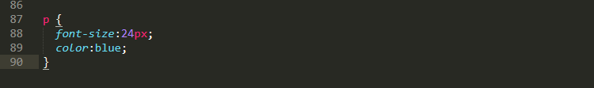
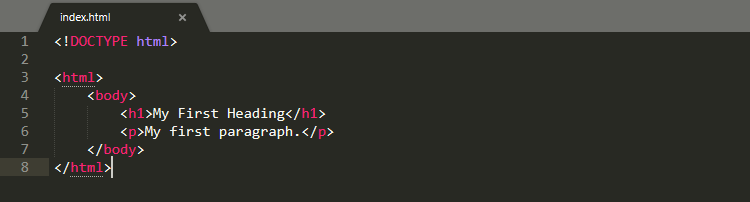
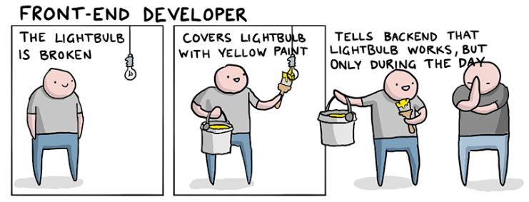
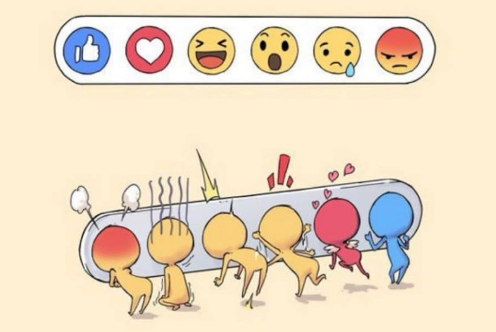
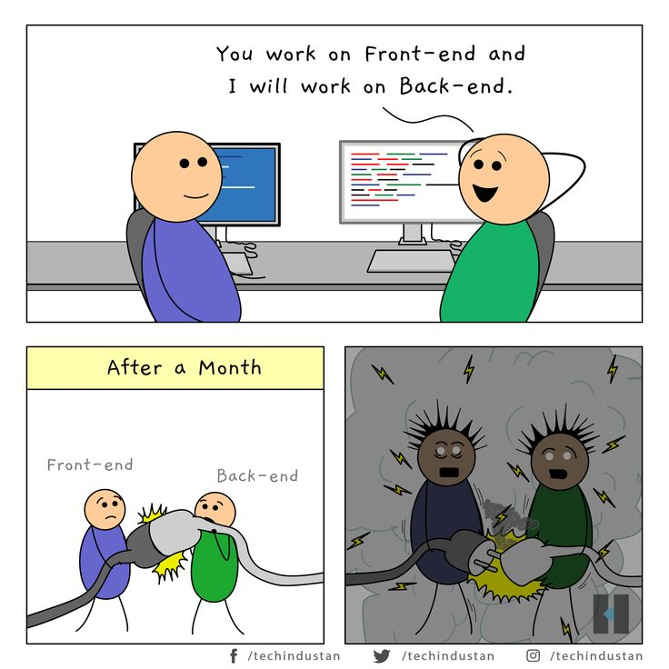
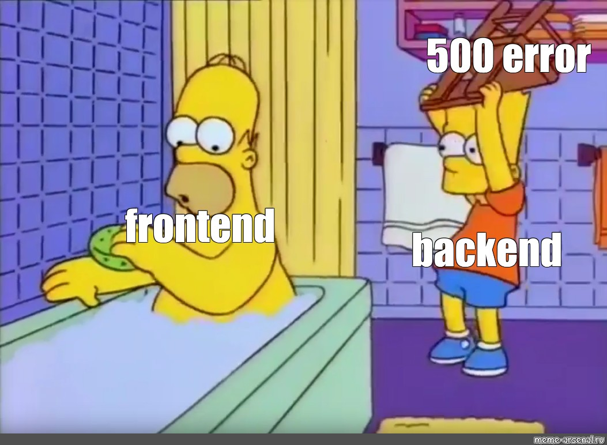

R@bot-work
О Frontend - разработке
Фронтенд веб-сайта — это все, что пользователь видит и с чем может взаимодействовать при помощи браузера. Создание этой визуальной части называется фронтенд-разработкой. Дизайнеров, создающих пользовательские интерфейсы, тоже можно в какой-то смысле назвать фронтенд-разработчиками, потому что они совместно работают над этой же частью проекта. Для разработки фронтенда в качестве базовых инструментов используются: HTML (для создания базовой структуры страниц и контента), CSS (для стилизации внешнего вида) и JavaScript (для добавления интерактивности). Такой же набор инструментов используется в процессе создания прогрессивных веб-приложений — мобильных приложений, которые выглядят, как нативные, но при этом создаются с участием фронтенд-технологий. Подробнее об этом можно почитать в статье по ссылке.
HTML (от англ. Hypertext Markup Language) — это язык гипертекстовой разметки, предназначенный для создания веб-сайтов, которые впоследствии могут просматриваться при помощи доступа к интернету. HTML обычно используется для структурирования веб-документа. Он определяет такие элементы, как заголовки или абзацы, и позволяет вставлять изображения, видео и другие медиафайлы.
Гипертекст — способ, с помощью которого мы путешествуем по интернету, переходя по гиперссылкам, которые ведут на другие страницы. «Гипер» отсылает к нелинейности, которая позволяет перемещаться в любое место, поскольку этот процесса не подразумевает предопределенного порядка. Разметка определяет качества, которыми наделяется текст внутри HTML-тегов. Теги определяют, как браузеры форматируют и отображают содержимое страницы. Будучи языком, он содержит кодовые слова и синтаксис, как и любой другой язык.
С момента первого своего релиза в 1991 году HTML претерпел множество обновлений. HTML5 был выпущен в 2014 году. В него были добавлены такие функции, как поддержка оффлайн хранилищ мультимедийных данных, более точные элементы контента (например, хедер, футер, навигация) и поддержка встраивания аудио и видео.
CSS («каскадные таблицы стилей», от англ. Cascading Style Sheets) — это язык, используемый для стилизации страниц. Он определяет то, как HTML-элементы будут выглядеть на веб-странице с точки зрения дизайна, макета на разных устройствах с разными размерами экрана. CSS управляет макетом множества различных веб-страниц одновременно.
Как это работает. CSS взаимодействует с HTML-элементами, компонентами веб-страницы. Для взаимодействия с HTML в CSS используются селекторы. Селектор — это часть CSS-кода, определяющая, на какую часть HTML будут воздействовать стили CSS. Объявление содержит свойства и значения, используемые селектором. Свойства определяют размер шрифта, цвет и отступы. Каждое свойство имеет значение или набор значений.
CSS-фреймворк — это набор дефолтных CSS- и HTML-файлов, который расширяет возможности по части дизайна. Помимо их пользы при создании адаптивного дизайна, CSS-фреймворки помогают создавать различные макеты, что избавляет разработчиков от необходимости писать код с нуля в каждом случае. Обычно они заметно помогают при разработке веб-приложений под разные платформы и размеры экрана. Благодаря общим компонентам пользовательского интерфейса, Grid Layout и многим другим функциям, CSS-фреймворки значительно ускоряют рабочий процесс разработки. Существуют разные виды фреймворков:Полнофункциональные (Bootstrap, Foundation, Semantic UI и др.), Ориентированные на материальный дизайн: (Materialize and Material Design Lite), Легкие (Pure).
Написание CSS является рутиной, и мелкие задачи, такие как: поиск значений цвета, закрытие тегов или любые другие повторяющиеся операции, отнимают много времени. Вот где пригождается препроцессор. CSS-препроцессор представляет собой скриптовый язык и расширяет возможности CSS.
Sass расшифровывается как Syntactically Awesome Style Sheets («синтаксически превосходные таблицы стилей»). Sass работает на Ruby и обрабатывается на стороне сервера. Поскольку корни его происхождения восходят к языку Ruby, установка осуществляется через так называемые gem-ы (несколько библиотек Ruby/Rails).
LESS расшифровывается как Leaner Style Sheets («компактная таблица стилей»). На данный момент его можно назвать скорее JavaScript-библиотекой, которая обрабатывается на стороне клиента в браузере. Разработчики гораздо чаще выбирают LESS при использовании JavaScript с таблицами стилей. Эта технология позволяет использовать фрагменты CSS-кода в файлах LESS повторно.
Frontend
Самые популярные CSS-фреймворки
где P (абзац) — это селектор, { font-size:24px; color:blue; } — это объявление, font-size: и color: — свойства, а 24px; и blue; — значения.
Парный тег html> / /html> определяет границы веб-страницы, а текст между тегами body> / /body> определяет видимое содержимое страницы. !DOCTYPE html в самом начале объявляет тип документа для HTML5. Если его не обозначить, разные браузеры будут отображать его по-своему.
Фронтэнд-разработчики красят лампу в жёлтый цвет и втирают бэкенду, что лампочка работает, но только в дневное время.
Статьи:
- Backend
- За что отвечает бэкенд-разработчик:
- Где нужен?
- Важные личные качества
- Лучшие книги и средства обучения
О Backend - разработке
бэкенд-разработчик — это программист, который отвечает за внутреннюю и вычислительную логику веб-сайта или веб-приложения, а также иного программного обеспечения и информационных систем. Строго говоря, бэкенд бывает не только у веб-решений, он есть и у десктопа, и у мобильных приложений, т.к. по сути бэкенд — это всё, что относится к программно-аппаратной части сервиса. Но исторически так сложилось, что бэкенд и фронтенд начали особенно явно выделять именно в веб-разработке. А поскольку это ещё и самая популярная на данный момент сфера, то и мы будем говорить именно о вебе (для десктопа многие тезисы тоже будут справедливы, а про мобильных разработчиков мы с вами поговорим в одном из выпусков отдельно).
Бэкенд-разработчик создаёт компоненты и функции, которые доступны пользователю приложения или сайта через интерфейс. Проще говоря, бэкендеры — это программисты, которые разрабатывают всё то, что не видит и напрямую не трогает пользователь. То есть красивая форма ввода данных или корзина интернет-магазина — это фронтенд, а хранение данных в СУБД, связка полей формы регистрации и корзины, интеграция с платёжным шлюзом, автоматические письма, подгрузка и обновление контента — это всё бэкенд. Поэтому, если форма регистрации стала отдавать ошибку базы, виноват… тестировщик (почему— мы тоже расскажем в очередной серии).
бэкенд-разработчик отвечает за:
- обеспечение корректной работы всех функций сайта и его вычислительной логики;
- организация и работа с базами данных посредством СУБД;
- разработка базовой логики и алгоритмов работы приложения;
- API;
- необходимые интеграции с внешними сервисами;
- тестирование и отладка приложения и отдельных компонентов.
Как и в случае с фронтенд-разработкой, абсолютно везде, где есть сайт или приложение, которое в вебе взаимодействует с пользователем. Другое дело, что всем нужны бэкендеры разного уровня: в офисе условной социальной сети или крупного сайта объявлений бэкенд-разработчик обязан не просто иметь базовые навыки, но и работать с высокими нагрузками, микросервисной архитектурой и контейнеризацией (Docker, Kubernetes), знать системы мониторинга (типа Zabbix, Grafana), иметь навыки Scrum (опционально для конкретных компаний). А для небольшого интернет-магазина вполне достаточно связки PHP-Ajax-нужная СУБД-немного HTML, иногда и того меньше. Понятно, что и оплата труда, и требования к опыту также совершенно разные.
Заработную плата от 55000 до 250000 и выше
Требования к бэкендеру ещё более чувствительны к особенностям компании и её бизнес-процессам, чем у фронтендера. Иногда это могут быть весьма странные на первый взгляд вещи такие как «понимание принципов работы рыбного холодильника как предприятия», «знание основ продаж или опыт в продажах», «блестящее знание JavaScript, CSS и HTML». Но это выглядит безумно и отталкивающе только при первом подходе. На самом деле, бэкенд-разработчик действительно больше погружён в бизнес-процессы, должен не только разрабатывать код в соответствие с ними, но и подстраивать какие-то вещи под конкретные задачи, понимать, как оно работает изнутри. Если вы никогда не видели воронку продаж и не понимаете, чё это за фигня, вы никогда не сможете разработать её логику вместе с фильтрами, срезами и переходами (даже если у вас будет отличное ТЗ, разобраться сложно). Ну а в примере с «блестящее знание JavaScript, CSS и HTML» всё просто: вероятно, руководитель не очень-то доверяет своему другому разработчику и готов пересмотреть подход к разработке. Такое нередко случается в небольших компаниях.
Требования:Знание хотя бы одного «серверного» языка программирования: PHP, Go, ASP.NET, C/C++, Python, Ruby, Java. В некоторых случаях достаточно знания JavaScript для бэкенда (Node.js), Знание API , Понимание принципов работы серверов Apache, NGINX, IIS и проч., Навыки написания юнит-тестов и покрытия кода тестами, Навыки написания запросов к БД и проектирования баз данных, Администрирование UNIX, Знание принципов работы HTTP
Бэкендеру хорошо, он может быть интровертом. Его зона работы с пользователями сведена до минимума, в основном, все рабочие контакты с менеджерами или коллегами. Эти ребята нередко работают по ТЗ и делают всё так, как это прописано в документе либо так, чтобы получить состояние, максимально близкое к целевому (ТЗ, знаете ли, тоже бывают несовершенны, а то и совершенно не…). Однако есть набор качеств, без которых о направлении бэкенда думать не стоит. Они вам могут показаться чем-то вроде качеств сотрудника, который нужен «молодой динамически развивающейся команде», но нет, речь именно о внутренних императивах, которые помогут не просто хорошо выполнять работу, но и делать это с внутренним комфортом (а не на «отвяжись»).
Ответственность. Действительно, на бэкендере лежит ответственность буквально за всё: чтобы данные сохранились, чтобы реляционные таблицы работали как надо, чтобы временные пояса учитывались, чтобы сайт был шустрым и т.д. И если кривая навигация от фронтендера приведёт к паре злобных вскриков пользователей, то ошибка бэкендера может стоить очень дорого — в прямом смысле (например, если бизнес-данные по какой-то причине перестанут сохраняться или не сработает разделение прав доступа в какой-нибудь CRM-системе).
Внимательность и внимание к мелочам. Опять же, мелочей в бэкенде не бывает, поэтому необходимо тщательно проектировать связность работы всех компонент и не упустить ничего.
Навыки планирования и исполнения плана. Бэкенд любого проекта — это сборник разноплановых задач. И если вы единственный бэкендер проекта или у вас с коллегами слабо реализовано разделение труда, только планирование и спасёт от авралов, факапов и срыва дедлайнов. Жёсткое к себе и времени планирование — залог спокойной работы практически без переработок (которые у бэкендеров случаются чаще остальных).
Для любого программиста крайне желателен английский язык не ниже upper-intermediate с уклоном в технический английский. Так вы сможете читать в оригинале многочисленные рекомендации Google и других компаний для оптимальной разработки (очень много полезной документации!), самообучаться с помощью зарубежных лекций, общаться с коллегами на форумах, задавать вопросы, а также читать книги по юзабилити и дизайну, среди которых очень много крутых англоязычных и пока не переведённых изданий.
Базовая книга по вашему языку программирования — мне нравятся издания O’Reilly, многие переведены издательством «Питер».
Джоэл Х. Спольски — можно читать его блог, можно ещё на просторах Рунета найти электронную книгу «Джоэл о программировании» — сборник постов из блога на русском.
Backend
Вперёд, к вершинам бэкенда.
Бэкенд это всегда немного боль
Совместная работа бэкенд и фронтенл разработчика
Миф:Бэкенд — это очень сложно
Бэкенд-разработчики удивляются, откуда у всех взялись проблемы с этими лампочками, вспоминает, что забыл задеплоить свет в базу данных, успокаивается и валит вину на фронтэнд.